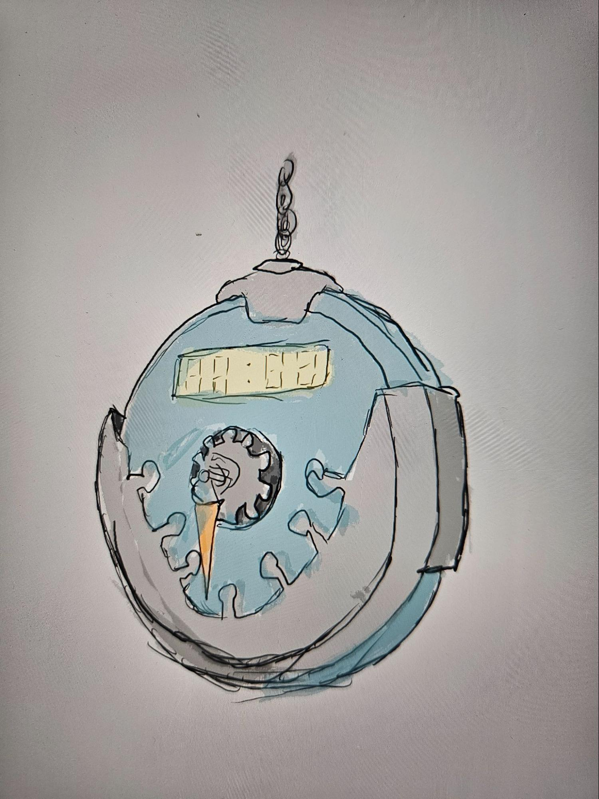
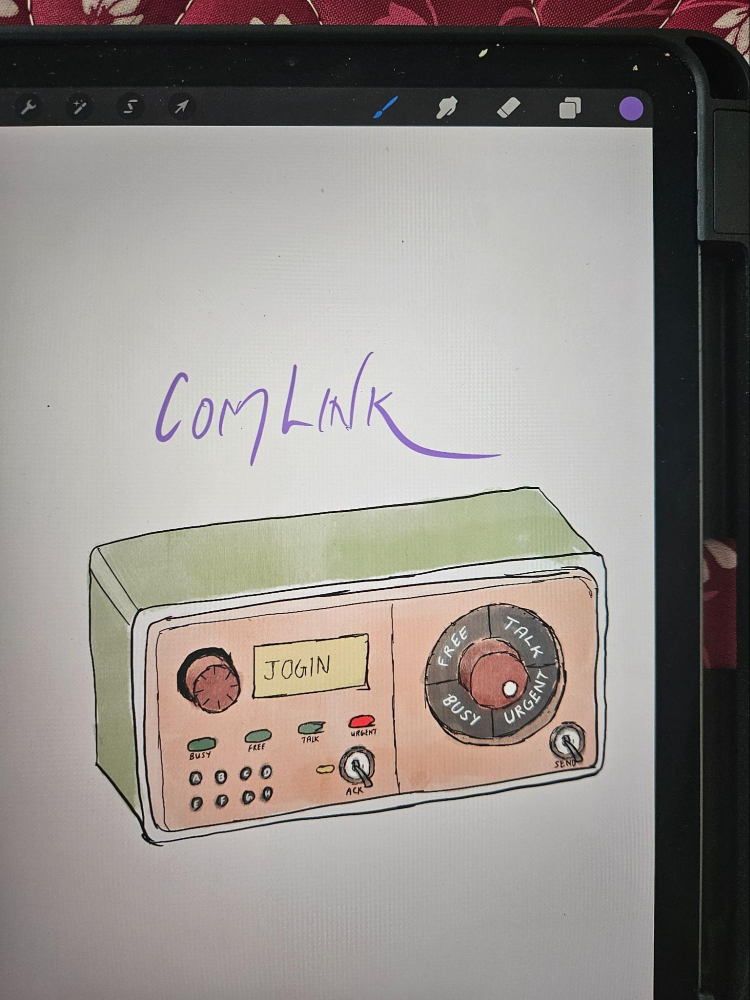
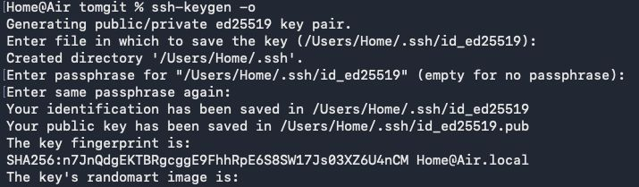
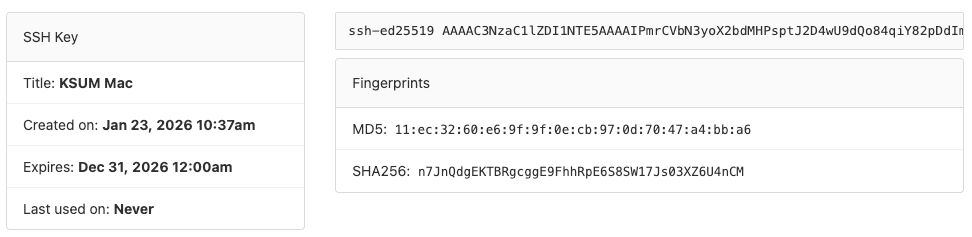
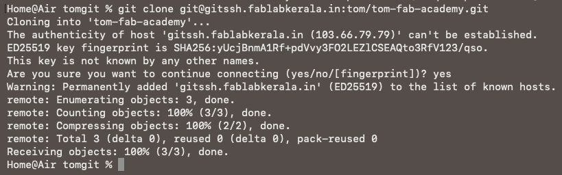
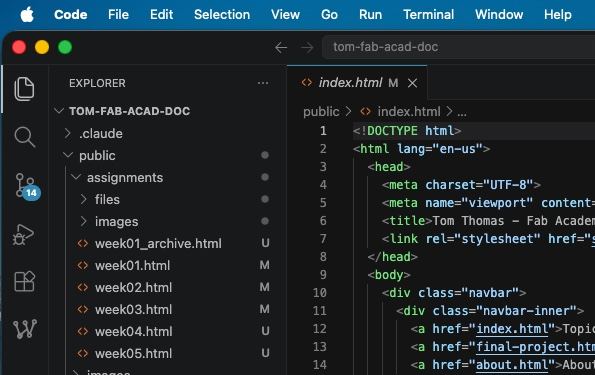

The first week covered the principles and practices of Fab Academy, exploring final project ideas and setting up the tools needed for version control and documentation.
I'm considering two projects at the moment. The final decision will be taken after getting feedback from the Fab Gurus in Super FabLab Kerala.

TIMEWINDER
A rune that gives the user the ability to control time. The device would use sensors and visual feedback to create an immersive experience around the concept of time manipulation.

COMLINK
A device to send status messages to close friends, families and allies. A simple, low-power communication tool that lets people share their availability or mood without using a smartphone.
/bin/bash -c "$(curl -fsSL https://raw.githubusercontent.com/Homebrew/install/HEAD/install.sh)"
ssh-keygen -o

Installing Git Locally
- Installed Homebrew from the Mac Terminal. Xcode and Git installed automatically.
- Set up the SSH key, choosing the destination as the home folder. The file is named with extension
.ssh. The dot makes it a hidden folder. - I didn't add a passcode, but it is good to add one. And don't publish the private key anywhere — the private key is the random art image inside the box in the terminal.
cat ~/.ssh/id_ed25519.pub

Setting up Git Tunnel
- Now that a public key & private key pair has been created locally for authentication, copy the public key from terminal using the cat command.
- Logged into GitHub, added a new blank project and named it Tom - Fab-Academy.
- Go to Git Preferences and add the public key that was copied. This creates a secure tunnel between the local machine and the remote repository — the public key acts as the lock and only the local private key can open it.
git clone https://github.com/USERNAME/REPOSITORY.git

Cloning the Repo
- Copied clone url from git. Make sure you are copying the url for clone with SSH and not with HTTPS.
- Run the clone command locally to copy the existing GitHub files into local machine.
- Use add, compile and push commands from the terminal to move local changes to online GitHub repository.

Setting up the Developer Environment
Installed VSCode with two key extensions:
- Live Server — real-time page preview (right-click the index page and open with Live Server)
- Image — converts .png screenshots to .jpg for smaller file sizes
Copied the documentation template into the cloned repo and edited the HTML to build this site.